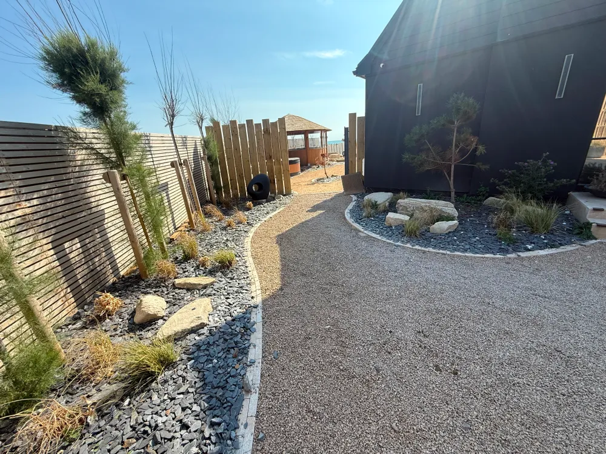

Built on ambition, driven by quality.
A Sterling Landscapes was founded with a clear vision: to create outdoor spaces of exceptional quality that challenge the boundaries of what landscaping can achieve.
Based in Chichester, West Sussex, the company has grown from a one-man operation into a dedicated team of seven skilled professionals — expanding to over ten during peak seasons. This growth reflects a simple principle: consistently delivering work that exceeds expectations.
Every project, regardless of scale, is approached with the same meticulous attention to detail. From the initial consultation through to the final finish, A Sterling Landscapes manages the entire process — ensuring that materials, craftsmanship and design intent remain aligned throughout.


Behind every A Sterling Landscapes project is a team of experienced professionals who share a commitment to precision and quality.
The team brings expertise across all aspects of hard and soft landscaping — from groundworks and drainage through to fine stonework, bespoke carpentry and planting schemes. This breadth of capability means the company can deliver complete garden transformations without relying on external contractors.
Alfie works closely with every project, maintaining a hands-on approach that ensures the finished result meets the exacting standards the company is known for.
A Sterling Landscapes works with homeowners, architects and garden designers to bring ambitious outdoor projects to life.
The approach begins with understanding the client — their vision, their lifestyle and how they want to use their outdoor space. From there, the team develops a plan that balances design ambition with practical construction expertise.
A Sterling Landscapes is positioning itself at the very top of the market — delivering bespoke gardens that challenge the £100,000 mark and beyond. This is not about volume; it is about creating truly remarkable outdoor spaces that homeowners will treasure for decades.
Every material is considered. Every joint is precise. Every finish is immaculate.